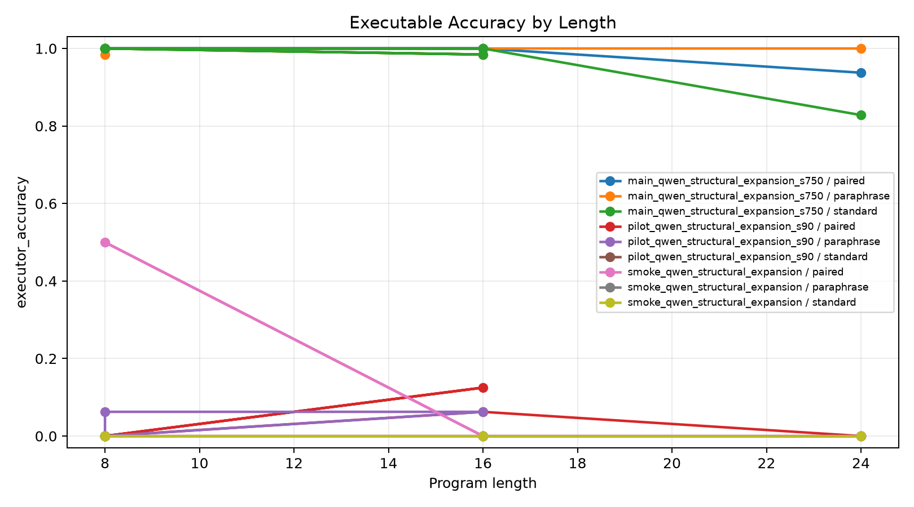
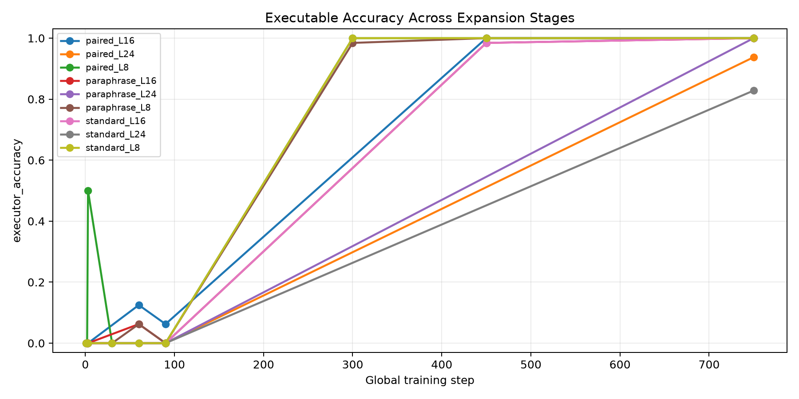
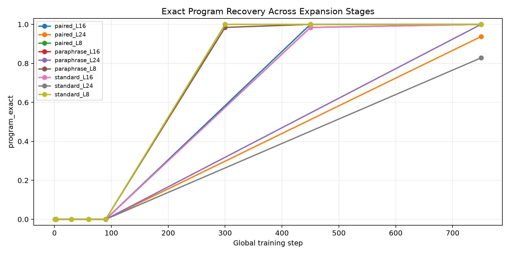
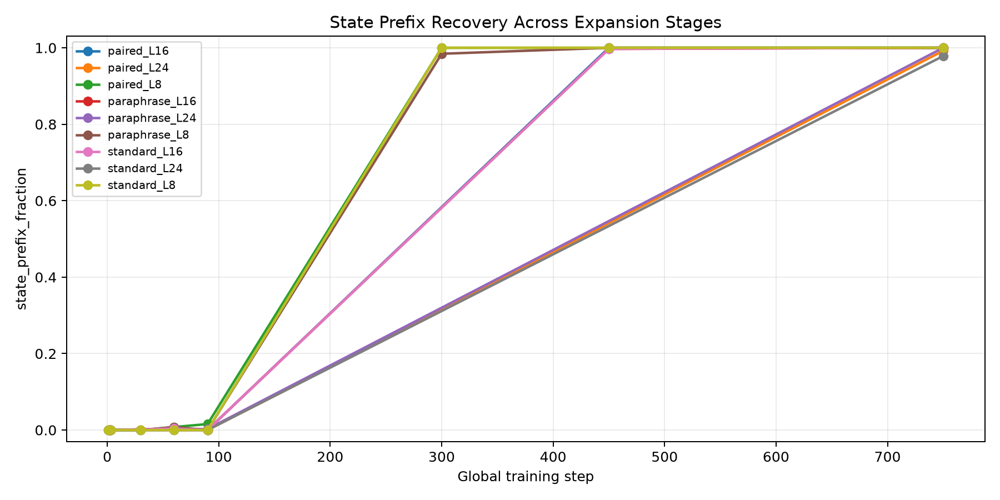
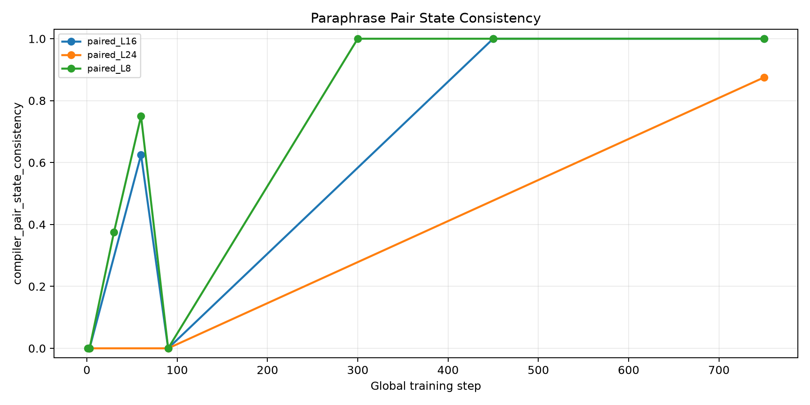
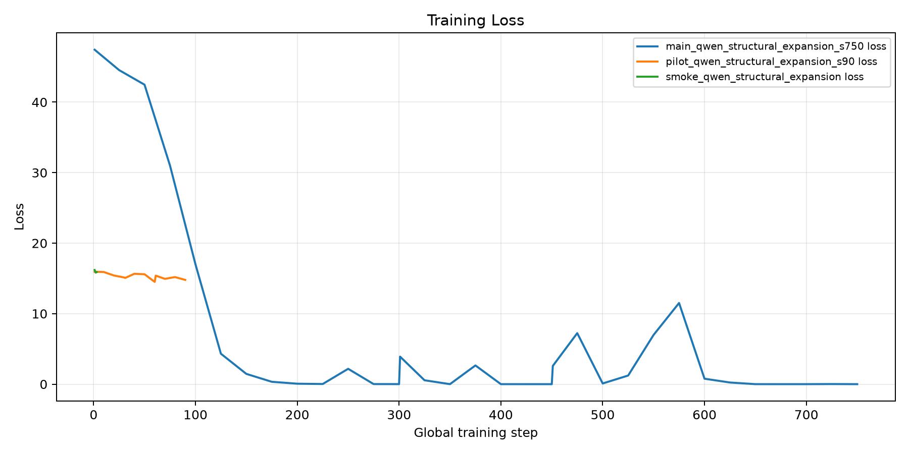
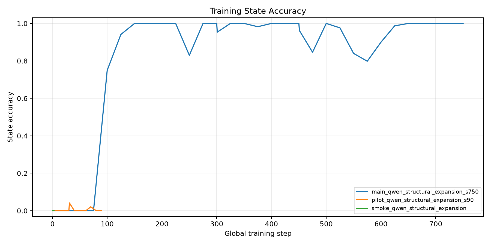

Can a Qwen-attached executable latent compiler be expanded from short modular programs to longer modular programs while preserving direct executable accuracy, without beam search, candidate reranking, or tokenized program output?
A Qwen causal LM reads the arithmetic prompt and fixed latent register markers.
A structural compiler head predicts one initial value plus typed operation and argument slots.
A differentiable modular executor supervises final answer probability and intermediate state traces.
The compiler is expanded by copying learned short-slot parameters into longer slot structures, then continuing training.
The run reports argmax executable accuracy, exact program recovery, state prefix recovery, and paraphrase-pair consistency.
| run | elapsed_sec | model | stage_max_steps | stage_steps | train_examples | gpu |
|---|---|---|---|---|---|---|
| main_qwen_structural_expansion_s750 | 1833 | Qwen/Qwen3-4B | 8,16,24 | 300,150,300 | 512 | NVIDIA RTX 6000 Ada Generation |
| pilot_qwen_structural_expansion_s90 | 84.14 | Qwen/Qwen3-4B | 8,16,24 | 30,30,30 | 64 | NVIDIA RTX 6000 Ada Generation |
| smoke_qwen_structural_expansion | 6.944 | Qwen/Qwen3-4B | 8,16,24 | 1,1,1 | 4 | NVIDIA RTX 6000 Ada Generation |
Final expanded 24-slot compiler, length-24 splits:
| split | executor_accuracy | program_exact | state_prefix_fraction | executor_pair_both_correct | compiler_pair_state_consistency |
|---|---|---|---|---|---|
| standard_L24 | 82.8% | 82.8% | 97.9% | ||
| paraphrase_L24 | 100.0% | 100.0% | 100.0% | ||
| paired_L24 | 93.8% | 93.8% | 99.2% | 87.5% | 87.5% |
Best single split executable accuracy was 100.0%; the length-24 table above is the main result.
| run | stage | split | global_step | max_steps | executor_accuracy | program_exact | state_prefix_fraction | state_all_exact | executor_pair_both_correct | compiler_pair_state_consistency | length |
|---|---|---|---|---|---|---|---|---|---|---|---|
| main_qwen_structural_expansion_s750 | stage1_max8 | paired_L8 | 300 | 8 | 100.0% | 100.0% | 100.0% | 1 | 100.0% | 100.0% | 8 |
| main_qwen_structural_expansion_s750 | stage1_max8 | paraphrase_L8 | 300 | 8 | 98.4% | 98.4% | 98.4% | 0.9844 | 8 | ||
| main_qwen_structural_expansion_s750 | stage1_max8 | standard_L8 | 300 | 8 | 100.0% | 100.0% | 100.0% | 1 | 8 | ||
| main_qwen_structural_expansion_s750 | stage2_max16 | paired_L8 | 450 | 16 | 100.0% | 100.0% | 100.0% | 1 | 100.0% | 100.0% | 8 |
| main_qwen_structural_expansion_s750 | stage2_max16 | paraphrase_L8 | 450 | 16 | 100.0% | 100.0% | 100.0% | 1 | 8 | ||
| main_qwen_structural_expansion_s750 | stage2_max16 | standard_L8 | 450 | 16 | 100.0% | 100.0% | 100.0% | 1 | 8 | ||
| main_qwen_structural_expansion_s750 | stage2_max16 | paired_L16 | 450 | 16 | 100.0% | 100.0% | 100.0% | 1 | 100.0% | 100.0% | 16 |
| main_qwen_structural_expansion_s750 | stage2_max16 | paraphrase_L16 | 450 | 16 | 98.4% | 98.4% | 99.7% | 0.9844 | 16 | ||
| main_qwen_structural_expansion_s750 | stage2_max16 | standard_L16 | 450 | 16 | 98.4% | 98.4% | 99.7% | 0.9844 | 16 | ||
| main_qwen_structural_expansion_s750 | stage3_max24 | paired_L8 | 750 | 24 | 100.0% | 100.0% | 100.0% | 1 | 100.0% | 100.0% | 8 |
| main_qwen_structural_expansion_s750 | stage3_max24 | paraphrase_L8 | 750 | 24 | 100.0% | 100.0% | 100.0% | 1 | 8 | ||
| main_qwen_structural_expansion_s750 | stage3_max24 | standard_L8 | 750 | 24 | 100.0% | 100.0% | 100.0% | 1 | 8 | ||
| main_qwen_structural_expansion_s750 | stage3_max24 | paired_L16 | 750 | 24 | 100.0% | 100.0% | 100.0% | 1 | 100.0% | 100.0% | 16 |
| main_qwen_structural_expansion_s750 | stage3_max24 | paraphrase_L16 | 750 | 24 | 100.0% | 100.0% | 100.0% | 1 | 16 | ||
| main_qwen_structural_expansion_s750 | stage3_max24 | standard_L16 | 750 | 24 | 100.0% | 100.0% | 100.0% | 1 | 16 | ||
| main_qwen_structural_expansion_s750 | stage3_max24 | paired_L24 | 750 | 24 | 93.8% | 93.8% | 99.2% | 0.9375 | 87.5% | 87.5% | 24 |
| main_qwen_structural_expansion_s750 | stage3_max24 | paraphrase_L24 | 750 | 24 | 100.0% | 100.0% | 100.0% | 1 | 24 | ||
| main_qwen_structural_expansion_s750 | stage3_max24 | standard_L24 | 750 | 24 | 82.8% | 82.8% | 97.9% | 0.8281 | 24 | ||
| pilot_qwen_structural_expansion_s90 | stage1_max8 | paired_L8 | 30 | 8 | 0.0% | 0.0% | 0.0% | 0 | 0.0% | 37.5% | 8 |
| pilot_qwen_structural_expansion_s90 | stage1_max8 | paraphrase_L8 | 30 | 8 | 0.0% | 0.0% | 0.0% | 0 | 8 | ||
| pilot_qwen_structural_expansion_s90 | stage1_max8 | standard_L8 | 30 | 8 | 0.0% | 0.0% | 0.0% | 0 | 8 | ||
| pilot_qwen_structural_expansion_s90 | stage2_max16 | paired_L8 | 60 | 16 | 0.0% | 0.0% | 0.8% | 0 | 0.0% | 75.0% | 8 |
| pilot_qwen_structural_expansion_s90 | stage2_max16 | paraphrase_L8 | 60 | 16 | 6.2% | 0.0% | 0.8% | 0 | 8 | ||
| pilot_qwen_structural_expansion_s90 | stage2_max16 | standard_L8 | 60 | 16 | 0.0% | 0.0% | 0.0% | 0 | 8 | ||
| pilot_qwen_structural_expansion_s90 | stage2_max16 | paired_L16 | 60 | 16 | 12.5% | 0.0% | 0.0% | 0 | 12.5% | 62.5% | 16 |
| pilot_qwen_structural_expansion_s90 | stage2_max16 | paraphrase_L16 | 60 | 16 | 6.2% | 0.0% | 0.4% | 0 | 16 | ||
| pilot_qwen_structural_expansion_s90 | stage2_max16 | standard_L16 | 60 | 16 | 0.0% | 0.0% | 0.4% | 0 | 16 | ||
| pilot_qwen_structural_expansion_s90 | stage3_max24 | paired_L8 | 90 | 24 | 0.0% | 0.0% | 1.6% | 0 | 0.0% | 0.0% | 8 |
| pilot_qwen_structural_expansion_s90 | stage3_max24 | paraphrase_L8 | 90 | 24 | 0.0% | 0.0% | 0.0% | 0 | 8 | ||
| pilot_qwen_structural_expansion_s90 | stage3_max24 | standard_L8 | 90 | 24 | 0.0% | 0.0% | 0.0% | 0 | 8 | ||
| pilot_qwen_structural_expansion_s90 | stage3_max24 | paired_L16 | 90 | 24 | 6.2% | 0.0% | 0.0% | 0 | 0.0% | 0.0% | 16 |
| pilot_qwen_structural_expansion_s90 | stage3_max24 | paraphrase_L16 | 90 | 24 | 0.0% | 0.0% | 0.0% | 0 | 16 | ||
| pilot_qwen_structural_expansion_s90 | stage3_max24 | standard_L16 | 90 | 24 | 0.0% | 0.0% | 0.0% | 0 | 16 | ||
| pilot_qwen_structural_expansion_s90 | stage3_max24 | paired_L24 | 90 | 24 | 0.0% | 0.0% | 0.0% | 0 | 0.0% | 0.0% | 24 |
| pilot_qwen_structural_expansion_s90 | stage3_max24 | paraphrase_L24 | 90 | 24 | 0.0% | 0.0% | 0.3% | 0 | 24 | ||
| pilot_qwen_structural_expansion_s90 | stage3_max24 | standard_L24 | 90 | 24 | 0.0% | 0.0% | 0.0% | 0 | 24 | ||
| smoke_qwen_structural_expansion | stage1_max8 | paired_L8 | 1 | 8 | 0.0% | 0.0% | 0.0% | 0 | 0.0% | 0.0% | 8 |
| smoke_qwen_structural_expansion | stage1_max8 | paraphrase_L8 | 1 | 8 | 0.0% | 0.0% | 0.0% | 0 | 8 | ||
| smoke_qwen_structural_expansion | stage1_max8 | standard_L8 | 1 | 8 | 0.0% | 0.0% | 0.0% | 0 | 8 | ||
| smoke_qwen_structural_expansion | stage2_max16 | paired_L8 | 2 | 16 | 0.0% | 0.0% | 0.0% | 0 | 0.0% | 0.0% | 8 |
| smoke_qwen_structural_expansion | stage2_max16 | paraphrase_L8 | 2 | 16 | 0.0% | 0.0% | 0.0% | 0 | 8 | ||
| smoke_qwen_structural_expansion | stage2_max16 | standard_L8 | 2 | 16 | 0.0% | 0.0% | 0.0% | 0 | 8 | ||
| smoke_qwen_structural_expansion | stage2_max16 | paired_L16 | 2 | 16 | 0.0% | 0.0% | 0.0% | 0 | 0.0% | 0.0% | 16 |
| smoke_qwen_structural_expansion | stage2_max16 | paraphrase_L16 | 2 | 16 | 0.0% | 0.0% | 0.0% | 0 | 16 | ||
| smoke_qwen_structural_expansion | stage2_max16 | standard_L16 | 2 | 16 | 0.0% | 0.0% | 0.0% | 0 | 16 | ||
| smoke_qwen_structural_expansion | stage3_max24 | paired_L8 | 3 | 24 | 50.0% | 0.0% | 0.0% | 0 | 0.0% | 0.0% | 8 |
| smoke_qwen_structural_expansion | stage3_max24 | paraphrase_L8 | 3 | 24 | 0.0% | 0.0% | 0.0% | 0 | 8 | ||
| smoke_qwen_structural_expansion | stage3_max24 | standard_L8 | 3 | 24 | 0.0% | 0.0% | 0.0% | 0 | 8 | ||
| smoke_qwen_structural_expansion | stage3_max24 | paired_L16 | 3 | 24 | 0.0% | 0.0% | 0.0% | 0 | 0.0% | 0.0% | 16 |
| smoke_qwen_structural_expansion | stage3_max24 | paraphrase_L16 | 3 | 24 | 0.0% | 0.0% | 0.0% | 0 | 16 | ||
| smoke_qwen_structural_expansion | stage3_max24 | standard_L16 | 3 | 24 | 0.0% | 0.0% | 0.0% | 0 | 16 | ||
| smoke_qwen_structural_expansion | stage3_max24 | paired_L24 | 3 | 24 | 0.0% | 0.0% | 0.0% | 0 | 0.0% | 0.0% | 24 |
| smoke_qwen_structural_expansion | stage3_max24 | paraphrase_L24 | 3 | 24 | 0.0% | 0.0% | 0.0% | 0 | 24 | ||
| smoke_qwen_structural_expansion | stage3_max24 | standard_L24 | 3 | 24 | 0.0% | 0.0% | 0.0% | 0 | 24 |







This report is intentionally standalone. The key readout is whether expansion improves or preserves executable accuracy at longer lengths, and whether paraphrase-paired programs compile to the same latent execution trace.
Run outputs: `experiments/qwen_structural_latent_compiler_expansion/runs/`
Reports and figures: `experiments/qwen_structural_latent_compiler_expansion/reports/`
Large checkpoints: `large_artifacts/qwen_structural_latent_compiler_expansion/checkpoints/`